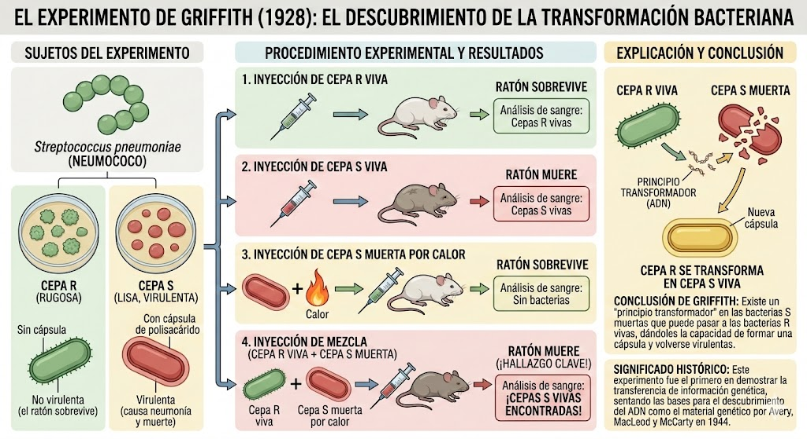

La búsqueda del Material Genético
Poco después de la Primera Guerra Mundial y de los letales azotes globales de la pandemia de Gripe Española, los gobiernos mundiales estaban abocados desesperadamente a lograr avances en microbiología y vacunación. El bacteriólogo británico Frederick Griffith trabajaba en Londres estudiando la Streptococcus pneumoniae (el neumococo), una temible bacteria que causaba brotes mortales de neumonía.
En 1928, el concepto de "gen" ya existía gracias a Mendel y Morgan, y se sabía que los cromosomas estaban hechos estructuralmente tanto de proteínas complejas como de ADN. Sin embargo, la inmensa mayoría de la comunidad científica apostaba ciegamente a que las proteínas eran las únicas moléculas lo suficientemente variadas e inteligentes como para contener las complejísimas "instrucciones matemáticas" de la vida. El ADN se consideraba entonces como una molécula monótona y estructuralmente estúpida, una mera armazón aburrida.
En este contexto, Griffith no buscaba descubrir la composición del genoma humano. Él quería crear una vacuna utilizando distintas cepas de neumococo. Como ocurre frecuentemente en la filosofía de la ciencia orientada por el marco de Serendipia, buscaba un resultado pragmático (una vacuna para la clínica) pero tropezó sin querer con la llave maestra biológica del siglo XX.
El dogma de las Proteínas y las Cepas
Para entender el impacto de Griffith, debemos comprender el paradigma rival o dominante de su época. Hasta mediados del siglo XX, la comunidad científica creía fervientemente que las responsables de la herencia genética eran las proteínas. Su argumento era cuantitativo y lógico: las proteínas son sumamente complejas, formadas por 20 aminoácidos diferentes (un alfabeto inmenso). El ADN, por el contrario, solo tenía 4 bases (un alfabeto diminuto) y se lo consideraba una molécula demasiado monótona, aburrida y estructuralmente "tonta" como para justificar la inmensa diversidad de la vida.
Ignorante de este inminente debate molecular, Frederick Griffith utilizó un modelo biológico compuesto por ratones de laboratorio y dos variantes (cepas) perfectamente diferenciables de la bacteria del neumococo:
Resurrección microbiológica
Como experimentador prudente, Griffith introdujo una nueva variable en el sistema. Tomó bacterias letales de la Cepa S y procedió a hervirlas aplicando intenso calor. Como era matemáticamente esperable biológicamente, el calor las carbonizó destruyéndolas por completo. Al inyectar estos "cadáveres bacterianos S", confirmando la racionalidad, los ratones vivieron sanos sin problema alguno.
La gran anomalía devastadora, que quebró las barreras de la racionalidad de la época, surgió en el cuarto tubo de ensayo experimental: cuando decidió combinar las bacterias de Cepa R vivas (que son inofensivas) inyectándolas simultáneamente con el caldo de bacterias S muertas por calor (que al estar muertas, también eran inofensivas).
A pesar del silogismo lógico aparente (inofensivo + inofensivo = inofensivo), al aplicar la mezcla letal el ratón enfermó brutalmente y murió de neumonía en poco tiempo. Pero la verdadera crisis ocurrió en la autopsia del roedor: de su sangre purulenta, Griffith aisló y encontró millones de bacterias de Cepa S relucientes, enteramente vivas y letales, construyendo su mortífera cápsula protectora con fluidez. ¿Cómo era posible si él las había calcinado?
El Principio Transformante
Las cuatro fases del Ensayo
El experimento clásico constó rigurosamente de 4 fases o inyecciones metódicas y observacionales en ratones, constituyendo un hito epistemológico donde cada variable aislada jugaba a favor y en contra de demostrar el fenómeno.

El "Principio Transformante" era innegable. Había algo, una molécula precisa y material en la naturaleza, que sobrevivía al holocausto del intenso fuego y que la bacteria viva recolectaba de los escombros de las bacterias muertas como en un lego de legados.
El colapso del paradigma proteico
Trágicamente para él, Griffith no vivió lo suficiente para saber cuál era exactamente esa molécula misteriosa; murió en 1941 durante un bombardeo aéreo en Londres. Su experimento, sin embargo, estableció la anomalía fundamental paradigmática. Había plantado la duda razonable.
Este experimento biológico forzó al establishment académico a abandonar sus preconcepciones dogmáticas. Dieciséis años después (en 1944 gracias al colosal experimento de Avery, MacLeod y McCarty que aisló puramente el principio de Griffith), se logró admitir lo inimaginable: las proteínas no importan como plano estructural. El Factor Transformante inerte biológico que reescribía a la Cepa R letal, recaía única y exclusivamente en el aburrido ADN. El paradigma científico colapsó y renació, dando paso oficial a la Genética Molecular Moderna que culminaría con Rosalind Franklin y Watson-Crick.
El experimento de Griffith es un ejemplo dorado de serendipia de descubrimiento de primer orden. Buscando en estricto rigor biomédico una simple vacuna para la neumonía humana de calle, construyó inadvertidamente el peldaño basal lógico más fuerte de toda la historia de la naciente genética molecular, encendiendo el motor del quiebre paradigmático para encontrar la posterior Doble Hélice en 1953.